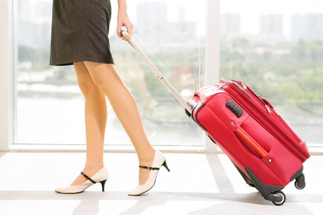

Ни для кого не секрет, что большинство людей хотя бы раз в жизни покидали пределы своего родного населенного пункта и путешествовали. Кто-то с рюкзаком за плечами покоряет Эверест, кто-то совершает паломничество в Израиль, а кто-то решает исследовать пещеры или леса в соседней области. Каждый выбирает то, что ему по вкусу.
Но почему же человека так тянет путешествовать?
Чего ему не хватает дома, в родных стенах? И с чем он возвращается домой, помимо уставших ног, выгоревших на солнце волос и блаженной улыбки? Обо всем этом мы и поговорим с вами прямо сейчас.

Польза путешествий
Польза путешествия:выводы ученыхИтак, в чем же польза путешествий? Этот список бесконечен, но попробуем выделить самые главные пункты:
- Личностный рост. Так или иначе, каждое путешествие раскрывает новые грани нас самих. Иногда, находясь в своей «зоне комфорта», не покидая привычных условий жизни, мы даже сами не подозреваем о своих возможностях. Нам кажется, что рутинный круг «работа-дом» — это все, на что мы способны. Но ведь это далеко не так!
Проживая неожиданные, незапланированные ситуации в путешествиях, мы учимся быстрому реагированию, адаптации, креативности, неординарности, приобретаем новые навыки общения. Что сказать, путешествие – это своеобразный психологический тренинг. Только все упражнения происходят не в игровой форме, а по-настоящему! - Новые интересные знакомства. Вы даже не можете представить, сидя дома на диване, каких интересных людей вы можете встретить в путешествии! Лично для меня это – всегда открытия, и однозначно приятные! Кто знает, возможно, вы познакомитесь с потенциальными работодателями, новыми веселыми друзьями или даже встретите свою вторую половинку! Да и просто иметь знакомых из многих стран на разных континентах и иногда получать по почте открытки на иностранных языках – уже это не может не радовать
- Оздоровление. Во время путешествий вы приобретете множество новых впечатлений, которые способствуют выделению эндорфинов – так называемых «гормонов счастья». Эти гормоны не позволяют организму преждевременно стареть, улучшают общее состояние, настраивают на позитив, являются профилактикой стресса. Кроме того, длительные пешие прогулки, солнечные ванны, купание в водоемах укрепляют физическое здоровье, наполняют организм силой и энергией.
- Духовное обогащение.Независимо от того, к какой религиозной конфессии вы принадлежите и принадлежите ли вообще, знакомство с духовной культурой других народов оказывает всегда благотворное влияние на вашу душу. Не зря, наверное, сейчас так популярны самые разнообразные паломничества по святым местам. Но за душевным спокойствием совсем не обязательно ехать во Вриндаван или в Мекку – вполне возможно, что вы найдете его в совершенно другом месте, пообщавшись со стариком из маленькой деревни или помедитировав на лесной полянке. А, может, вы обретете его посреди шумного мегаполиса? Кто знает…
Противопоказания – есть ли они?
Откровенно говоря, я знаю только одну причину, по которой вам не стоит отправляться в путешествие. Это – ваша личная неготовность. Она может быть связана как с физическим недомоганием (в это время лучше все же поберечься и не рисковать), так и с моральной неготовностью. Что же, насиловать себя в любом случае не стоит. Но, возможно, нужно разобраться – а чего именно вы боитесь? Что вам мешает? И хотите ли вы с этим справиться?
Какова же польза такого путешествия?
- Становление адекватной самооценки. Вы учитесь объективно оценивать себя и свои возможности.
- Растет ваша уверенность в своих силах. Вы начинаете осознавать, на что вы реально способны в этой жизни. Естественно, по возвращению домой это не останется незамеченным ни в кругу семьи, ни на работе.
- Становление адекватной самооценки. Вы учитесь объективно оценивать себя и свои возможности. Растет ваша уверенность в своих силах. Вы начинаете осознавать, на что вы реально способны в этой жизни. Естественно, по возвращению домой это не останется незамеченным ни в кругу семьи, ни на работе.
- Перефокусировка точки зрения на окружающую жизнь. Попросту, вы начинаете видеть хорошее в обычных на первый взгляд вещах. Если раньше мысль о чашке кофе в дешевой кафешке совершенно вас не трогала, то после двадцати километров, пройденных по плохой дороге, она способна вызвать у вас в восторг!
- Вы начнете видеть красоту во всем: в закате солнца где-нибудь в диком поле, в лунной дорожке над морем, в улыбках людей, проходящих мимо. В то же время, того, что раньше казалось неприятным и даже отвратительным, тоже станет меньше. Ведь вы меняетесь – и меняются ваши взгляды.
- Вы начнете видеть красоту во всем: в закате солнца где-нибудь в диком поле, в лунной дорожке над морем, в улыбках людей, проходящих мимо. В то же время, того, что раньше казалось неприятным и даже отвратительным, тоже станет меньше. Ведь вы меняетесь – и меняются ваши взгляды.